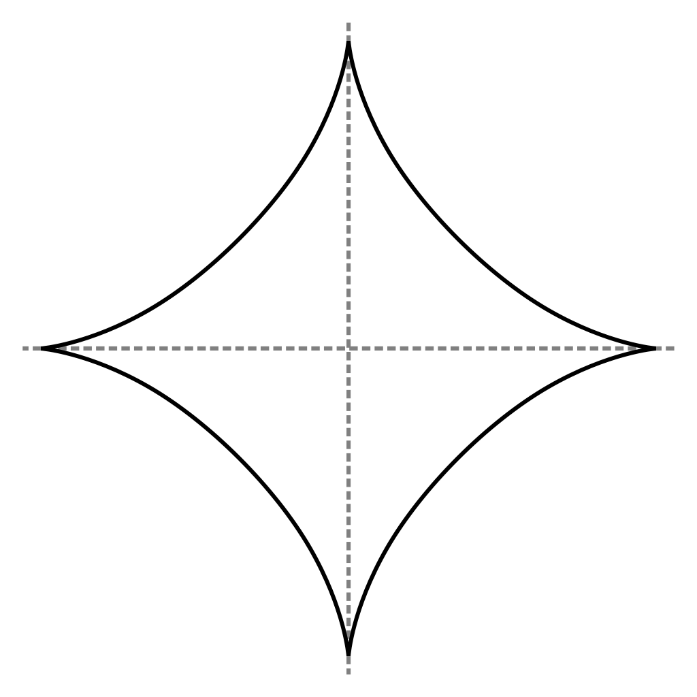

Introduction to Convex Sets
In this section we give a short overview about convex sets supported in this library. Currently we only list the basic convex sets and we refer to this presentation for a short explanation of operations on convex sets and composite set representations that are supported here and that we plan to add in the future.
Basic convex sets
A set $X ⊆ ℝ^n$ is convex if for any two points $x$, $y$ in $X$ the whole line segment connecting $x$ and $y$ is also contained in $X$. Formally:
\[ X = \{λ · x + (1 − λ) · y \mid x, y ∈ X, λ ∈ [0, 1] ⊆ ℝ\}\]
Below we show an example of a convex set and a non-convex set.
pentagon = VPolygon([[1., 2.], [2., 1.], [1.5, 0.], [0.5, 0.], [0., 1.]])hourglass = UnionSet(VPolygon([[0., 2.], [1., 0.9], [2, 2.]]),
VPolygon([[0., 0.], [1., 1.1], [2, 0.]]))The set types used in this example will be explained later. As a quick summary, the set type VPolygon represents a convex polygon as the convex hull of a given list of vertices (as opposed to a representation as the intersection of a given list of linear constraints; for that representation see the set type HPolygon). The UnionSet represents the union of two sets.
Empty set
The simplest convex set is the empty set.
dimension = 2
E = EmptySet(dimension)Singleton
The next simplest convex set is the singleton, which consists of a single point.
S = Singleton([1.0, 1.0])As a special case, the library also offers a representation of the singleton consisting of the origin.
dimension = 2
Z = ZeroSet(dimension)Unit balls
Now we consider sets that represent the unit balls in different $p$-norms.
\[ ‖ x = (x_1, …, x_n) ‖_p := \sqrt[^p]{|x_1|^p + … + |x_n|^p}\]
Formally, a unit ball is the sets of points $x$ with $‖x‖_p ≤ 1$.
Balls for $p ≥ 1$ are convex.
Infinity norm
The unit ball in the infinity norm ($p = ∞$) is also called hypercube.
Bi = BallInf([0.0, 0.0], 1.0)Euclidean norm
The unit ball in the Euclidean norm ($p = 2$) is also called hypersphere.
B2 = Ball2([0.0, 0.0], 1.0)Manhattan norm
The unit ball in the Manhattan norm ($p = 1$) is also called cross-polytope.
B1 = Ball1([0.0, 0.0], 1.0)More unit balls
Below we show more exotic example of unit balls for $p = 3, 42, π$.
B3 = Ballp(3., [0.0, 0.0], 1.0)B42 = Ballp(42., [0.0, 0.0], 1.0)Bπ = Ballp(π - 2., [0.0, 0.0], 1.0)
Finally, the following example of the unit ball for $p = 2/3$ demonstrates that for $p < 1$ the unit balls are not convex.

[Source: Wikimedia]
{kind=link}
Unbounded sets
Hyperplane
A hyperplane is the generalization of the line (in 2D) and the plane (in 3D). Formally, a hyperplane is parametric in a normal vector $a$ and a constant $b$ and represents the set of points $x$ satisfying $⟨a, x⟩ = b$ (where $⟨·⟩$ denotes the dot product).
Hp = Hyperplane([1.0, 1.0], 1.0)Half-space
A half-space is characterized by a hyperplane and represents all points that lie on one side of that hyperplane. Formally, it is the set of points $x$ satisfying $⟨a, x⟩ ≤ b$.
Hs = HalfSpace([1.0, 1.0], 1.0)Operations on convex sets
To be continued...
Composite convex sets
To be continued...